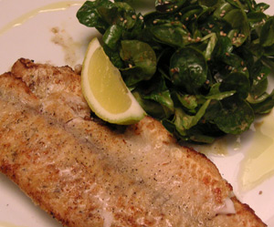

Zanderfilet und Nüsslisalat
4,5 von 6Nüsslisalat putzen und schwingen. Salatsauce mit Kürbiskernöl und Apfelessig zubereiten. Zander mit etwas Mehl bestäuben und auf beiden Seiten ca. 2 Minuten bei starker Hitze braten. Sofort servieren.
